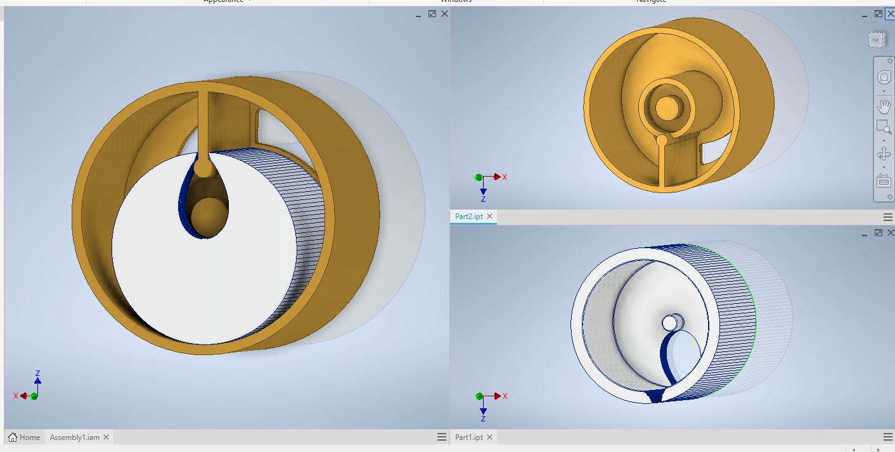
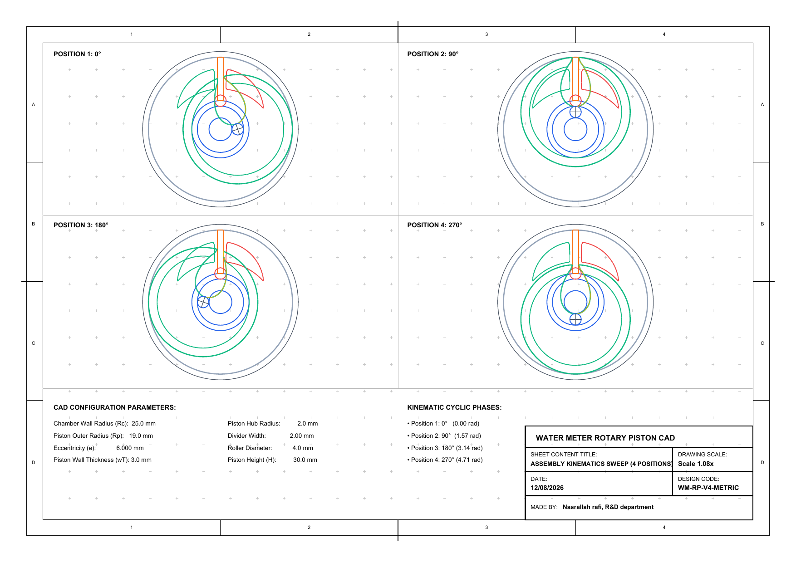
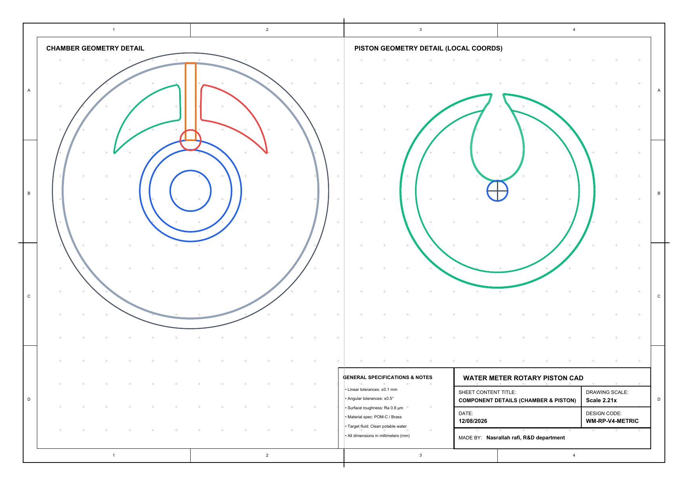

Ongoing independent project
Smart Water MeterRotary Measuring ChamberDevelopment
Building the mechanical and kinematic foundation for a smart metering system.
This project begins with the geometrical and kinematic study of a rotary measuring chamber. The current work establishes how the chamber and piston are shaped, related, and moved before the project advances toward fluid behavior, volumetric performance, and embedded integration.
What is being developed now
The first stage is deliberately mechanical: define the chamber, understand the piston motion, and create a reliable foundation for the future metering and electronics work.
3D geometrical modeling
Developing the rotary chamber, piston, divider, and associated geometry as a coherent mechanical assembly.
Kinematic analysis
Studying the relative motion of the piston and chamber throughout the operating cycle.
Mechanical foundation
Establishing the geometry and motion basis needed before hydraulic and embedded subsystems are added.

Kinematic animation — one complete cycle
Understanding the motion first is important before moving toward hydraulic and CFD analysis, where water flow, pressure distribution, and volumetric behavior can be investigated.
2D definition and design reference
The two blueprint sheets are shown below in order. Together they record the current design reference for the chamber development as a working document that can evolve with the mechanical study.
Open the original PDF

What comes next
The project will keep developing from the current mechanical base. These are the next investigation paths, not completed results.
This is an ongoing independent engineering project. I will continue sharing the development process as the mechanical, hydraulic, and embedded layers progress.